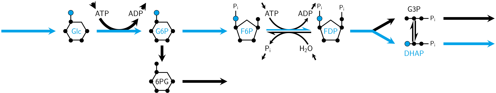

ACHMC (for AEFMs; under the hood)
This section explains the pre-processing steps under the hood of preprocess_all_for_atomic_chmc() using the same multispecies reaction network from the previous tutorial.

Inputs
using MarkovWeightedEFMs
S = [#
1 -1 0 0 0 0 0 0 0 0 0 0 0 0 0 0 # Glc
0 -1 0 0 0 -1 0 0 0 0 0 0 1 0 0 0 # ATP
0 1 -1 0 -1 0 0 0 0 0 0 0 0 0 0 0 # G6P
0 1 0 0 0 1 0 0 0 0 0 0 0 -1 0 0 # ADP
0 0 1 -1 0 0 0 0 0 0 0 0 0 0 0 0 # 6PG
0 0 0 0 1 -1 1 0 0 0 0 0 0 0 0 0 # F6P
0 0 0 0 0 0 1 0 0 0 0 0 0 0 -1 0 # Pi
0 0 0 0 0 0 -1 0 0 0 0 0 0 0 0 1 # H2O
0 0 0 0 0 1 -1 -1 0 0 0 0 0 0 0 0 # FDP
0 0 0 0 0 0 0 1 -1 1 -1 0 0 0 0 0 # G3P
0 0 0 0 0 0 0 1 1 -1 0 -1 0 0 0 0 # DHAP
]
v = [10, 10, 3, 3, 7, 8, 1, 7, 1, 1, 7, 7, 18, 18, 1, 1]
mets = [#
"Glc",
"ATP",
"G6P",
"ADP",
"6PG",
"F6P",
"Pi",
"H2O",
"FDP",
"G3P",
"DHAP"
]
rxns = [#
"Source Glc",
"Hexokinase",
"G6P dehydrogenase",
"Sink 6PG",
"Phosphoglucose isomerase",
"6-phosphofructo-1-kinase",
"Fructose 1,6-bisphosphatase",
"Fructose-bisphosphate aldolase",
"Triose phosphate isomerase",
"Triose phosphate isomerase",
"Sink G3P",
"Sink DHAP",
"Source ATP",
"Sink ADP",
"Sink Pi",
"Source H2O"
]
smiles = [#
"C([C@@H]1[C@H]([C@@H]([C@H](C(O1)O)O)O)O)O",
"C1=NC(=C2C(=N1)N(C=N2)[C@H]3[C@@H]([C@@H]([C@H](O3)COP(=O)(O)OP(=O)(O)OP(=O)(O)O)O)O)N",
"C([C@@H]1[C@H]([C@@H]([C@H](C(O1)O)O)O)O)OP(=O)(O)O",
"C1=NC(=C2C(=N1)N(C=N2)[C@H]3[C@@H]([C@@H]([C@H](O3)COP(=O)(O)OP(=O)(O)O)O)O)N",
"O=C1O[C@H](COP(=O)(O)O)[C@@H](O)[C@H](O)[C@H]1O",
"C([C@H]([C@H]([C@@H](C(=O)CO)O)O)O)OP(=O)(O)O",
"[O-]P(=O)([O-])[O-]",
"O",
"C(C1C(C(C(O1)(COP(=O)(O)O)O)O)O)OP(=O)(O)O",
"C([C@H](C=O)O)OP(=O)(O)O",
"C(C(=O)COP(=O)(O)O)O"
]
atom = :C # carbon atom type for AEFMsWe can check that the flux vector satisfies the steady state requirements.
all(S * v .== 0) # should evaluate as truetruePre-processing steps
Checking network structure
The following functions check for issues with the inputs. The first function find_atomic_chmc_input_errors identifies possible problems with the stoichiometry matrix and flux vector.
# Confirm there are no issues with stoichiometry matrix
errors = find_atomic_chmc_input_errors(S, v)print(errors) # summary of errors associated with S/v############################################################
## ERROR CHECKING STOICHIOMETRY MATRIX AND FLUX VECTOR #####
# (1) SUM OF ABSOLUTE FLUX RECONSTRUCTION ERROR:
# 0.0
# PASSED.
# (2) REACTIONS THAT ARE DUPLICATES:
# NONE.
# PASSED.
# (3) REACTIONS WTIH ZERO FLUX:
# NONE.
# PASSED.
# (4) REACTIONS WTIH NEGATIVE FLUX:
# NONE.
# PASSED.
# (5) INTERNAL REACTIONS W/ NON-INTEGER STOICHIOMETRIES:
# NONE.
# PASSED.
# (6) UNIMOLECULAR SOURCE REACTIONS W/ STOICH == 1:
# 1, 13, 16
# PASSED.
# (7) UNIMOLECULAR SOURCE REACTIONS W/ STOICH != 1:
# NONE.
# PASSED.
# (8) MULTIMOLECULAR SOURCE REACTIONS W/ STOICH == 1:
# NONE.
# PASSED.
# (9) MULTIMOLECULAR SOURCE REACTIONS W/ STOICH != 1:
# NONE.
# PASSED.
# (10) UNIMOLECULAR SINK REACTIONS W/ STOICH == 1:
# 4, 11, 12, 14, 15
# PASSED.
# (11) UNIMOLECULAR SINK REACTIONS W/ STOICH != 1:
# NONE.
# PASSED.
# (12) MULTIMOLECULAR SINK REACTIONS W/ STOICH == 1:
# NONE.
# PASSED.
# (13) MULTIMOLECULAR SINK REACTIONS W/ STOICH != 1:
# NONE.
# PASSED.
# (14) REACTIONS W/ NO SUBSTRATES OR PRODUCTS:
# NONE.
# PASSED.
# (15) # METABOLITES PARTICIPATING IN NO REACTIONS:
# NONE.
# PASSED.
# STATUS:
# PASSED. THESE INPUTS SATISFY ATOMIC CHMC REQUIREMENTS.
############################################################Correcting problems in network structure
Any problems, except for the steady state flux requirement, can be addressed via correct_atomic_chmc_input_errors.
# S and v have no errors so the inputs are returned
correct_atomic_chmc_input_errors(errors, S, mets, rxns)
# S, mets, rxns = correct_atomic_chmc_input_errors(errors, S, mets, rxns) # otherwiseIdentifying unmappable reactions
The next function correct_atomic_chmc_input_smiles checks and fixes problems relating to the SMILES strings. These problems are caused by RXNMapper being unable to map atoms in reactions with pseudometabolites or pseudoreactions with non-integer stoichiometries (e.g. biomass reaction). RXNMapper also has a character limit on reaction SMILES strings. These unmappable reactions are removed and the flux is balanced with unimolecular flux entering/exiting the associated reaction substrates/products.
# Correct issues associated with RXNMapper character limit,
# pseudometabolites and pseudoreactions
S, v, mets, rxns, smiles, logs = correct_atomic_chmc_input_smiles(S, v, mets, rxns, smiles)At this point, the SMILES strings (matching the updated mets if there were errors in the initial inputs) should be canonicalized. S is also converted to a Matrix{Int16} which is a requirement for subsequent functions.
smiles = canonicalize_smiles(smiles)smiles11-element Vector{String}:
"OC[C@H]1OC(O)[C@H](O)[C@@H](O)[C@@H]1O"
"Nc1ncnc2c1ncn2[C@@H]1O[C@H](COP(=O)(O)OP(=O)(O)OP(=O)(O)O)[C@@H](O)[C@H]1O"
"O=P(O)(O)OC[C@H]1OC(O)[C@H](O)[C@@H](O)[C@@H]1O"
"Nc1ncnc2c1ncn2[C@@H]1O[C@H](COP(=O)(O)OP(=O)(O)O)[C@@H](O)[C@H]1O"
"O=C1O[C@H](COP(=O)(O)O)[C@@H](O)[C@H](O)[C@H]1O"
"O=C(CO)[C@@H](O)[C@H](O)[C@H](O)COP(=O)(O)O"
"O=P([O-])([O-])[O-]"
"O"
"O=P(O)(O)OCC1OC(O)(COP(=O)(O)O)C(O)C1O"
"O=C[C@H](O)COP(=O)(O)O"
"O=C(CO)COP(=O)(O)O"Atom mapping reactions
The reaction SMILES strings rs are next constructed from the metabolite SMILES and the atom mapping is performed via RXNMapper and stored in ms.
# Construct atom traced SMILES strings
rs, ms = map_reaction_strings(S, smiles, rxns, false)rs16-element Vector{String}:
">>OC[C@H]1OC(O)[C@H](O)[C@@H](O)[C@@H]1O"
"OC[C@H]1OC(O)[C@H](O)[C@@H](O)[" ⋯ 167 bytes ⋯ "(O)OP(=O)(O)O)[C@@H](O)[C@H]1O"
"O=P(O)(O)OC[C@H]1OC(O)[C@H](O)[" ⋯ 34 bytes ⋯ "O)(O)O)[C@@H](O)[C@H](O)[C@H]1O"
"O=C1O[C@H](COP(=O)(O)O)[C@@H](O)[C@H](O)[C@H]1O>>"
"O=P(O)(O)OC[C@H]1OC(O)[C@H](O)[" ⋯ 30 bytes ⋯ "](O)[C@H](O)[C@H](O)COP(=O)(O)O"
"Nc1ncnc2c1ncn2[C@@H]1O[C@H](COP" ⋯ 163 bytes ⋯ ")OCC1OC(O)(COP(=O)(O)O)C(O)C1O"
"O.O=P(O)(O)OCC1OC(O)(COP(=O)(O)" ⋯ 43 bytes ⋯ "COP(=O)(O)O.O=P([O-])([O-])[O-]"
"O=P(O)(O)OCC1OC(O)(COP(=O)(O)O)" ⋯ 19 bytes ⋯ ")COP(=O)(O)O.O=C(CO)COP(=O)(O)O"
"O=C[C@H](O)COP(=O)(O)O>>O=C(CO)COP(=O)(O)O"
"O=C(CO)COP(=O)(O)O>>O=C[C@H](O)COP(=O)(O)O"
"O=C[C@H](O)COP(=O)(O)O>>"
"O=C(CO)COP(=O)(O)O>>"
">>Nc1ncnc2c1ncn2[C@@H]1O[C@H](COP(=O)(O)OP(=O)(O)OP(=O)(O)O)[C@@H](O)[C@H]1O"
"Nc1ncnc2c1ncn2[C@@H]1O[C@H](COP(=O)(O)OP(=O)(O)O)[C@@H](O)[C@H]1O>>"
"O=P([O-])([O-])[O-]>>"
">>O"ms16-element Vector{String}:
""
"[OH:5][CH2:6][C@H:7]1[O:8][CH:9" ⋯ 587 bytes ⋯ "H:40]([OH:41])[C@H:42]1[OH:43]"
"[O:8]=[P:7]([OH:9])([OH:10])[O:" ⋯ 177 bytes ⋯ "H:13]([OH:14])[C@H:15]1[OH:16]"
""
"[O:14]=[P:13]([OH:15])([OH:16])" ⋯ 178 bytes ⋯ "P:13](=[O:14])([OH:15])[OH:16]"
"[NH2:1][c:2]1[n:3][cH:4][n:5][c" ⋯ 640 bytes ⋯ "CH:44]([OH:45])[CH:46]1[OH:47]"
"[OH2:20].[O:17]=[P:18]([OH:19])" ⋯ 250 bytes ⋯ "P:18]([O-:19])([O-:20])[O-:21]"
"[O:18]=[P:17]([OH:19])([OH:20])" ⋯ 227 bytes ⋯ "P:17](=[O:18])([OH:19])[OH:20]"
"[O:4]=[CH:3][C@H:2]([OH:1])[CH2" ⋯ 73 bytes ⋯ ":6][P:7](=[O:8])([OH:9])[OH:10]"
"[O:1]=[C:2]([CH2:3][OH:4])[CH2:" ⋯ 73 bytes ⋯ ":6][P:7](=[O:8])([OH:9])[OH:10]"
""
""
""
""
""
""Identifying all source metabolite-atom positions
The following code extracts the source metabolite indices in mets and computes the total number of carbon atoms of interest.
# Total number of atom type across all metabolites
atom_max = get_max_atoms(smiles, atom)
# Identify source metabolite indices and copies of atom
src_mets = get_source_metabolites(S)
# Number of carbon atoms in each source metabolite
max_src_mets_carbon = atom_max[src_mets]# Source metabolites
mets[src_mets]3-element Vector{String}:
"Glc"
"ATP"
"H2O"# Carbons in each source metabolite
max_src_mets_carbon3-element Vector{Int64}:
6
10
0Enumerating metabolite-atom mappings across reactions
We then precompute an atom tracing dictionary mapping the (carbon) atom in the stoichiometric copy of a substrate to its product atom position across each reaction.
# Precompute atom tracing dictionary
D_C = precompute_atom_tracing_dictionary(S, ms, atom_max, atom) # S must be Matrix{Int16}D_CDict{NTuple{4, Int64}, Tuple{Int64, Int64}} with 62 entries:
(3, 2, 1, 3) => (5, 2)
(2, 2, 1, 6) => (4, 2)
(1, 2, 1, 2) => (3, 2)
(2, 5, 1, 2) => (4, 5)
(9, 1, 1, 7) => (6, 2)
(6, 1, 1, 6) => (9, 2)
(9, 1, 1, 8) => (10, 1)
(3, 3, 1, 5) => (6, 2)
(2, 9, 1, 6) => (4, 9)
(3, 4, 1, 5) => (6, 1)
(9, 2, 1, 7) => (6, 1)
(2, 1, 1, 2) => (4, 1)
(6, 2, 1, 6) => (9, 1)
(9, 2, 1, 8) => (10, 2)
(2, 8, 1, 2) => (4, 8)
(3, 6, 1, 3) => (5, 4)
(2, 6, 1, 6) => (4, 6)
(2, 10, 1, 2) => (4, 10)
(1, 6, 1, 2) => (3, 6)
⋮ => ⋮Conclusion
All of the code/functions described above are wrapped into preprocess_all_for_atomic_chmc(). If this wrapper function fails, you may need to step through these individual pre-processing functions to identify the error.